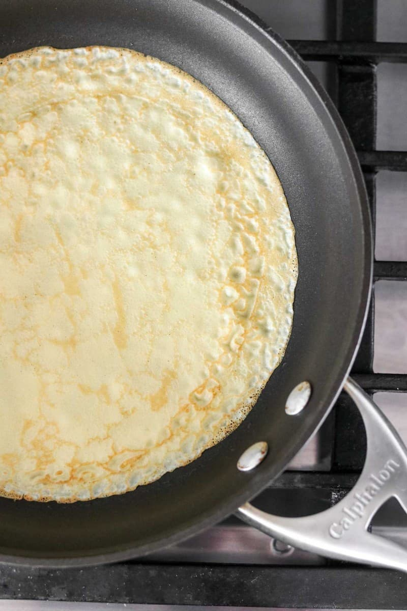
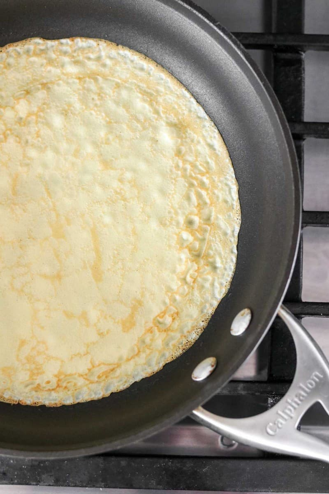

Double Chocolate Cookies

My daughter learned to make these cookies at a baking camp at Zingermanns and has tweaked the recipe to fit the taste buds of her siblings. They are extremely sugary so the salt helps to balance it. Note, these cookies are best eaten very quickly.
About
- Origin: Michigan
- Source: Family Recipe
- Category: Dessert
- Rating: 5/5
Recipe Ingredients
- Unsalted butter
- Granulated Sugar
- Packed light or dark brown sugar
- Large egg
- Pure vanilla extract
- Semi-sweet chocolate chunks (melted)
- All-purpose flour
- Natural unsweetened cocoa powder
- Baking soda
- Salt
- Semi-sweet chocolate chunks
Recipe Steps
- In a mixing bowl cream together the butter, granulated sugar, and brown sugar.
- Add the egg and vanilla extract and beat well.
- Add the melted chocolate.
- In a separate bowl combine the flour, baking soda, cocoa powder and salt.
- Combine the wet and dry ingredients.
- Add the unmelted chocolate chunks.
- Form 15 cookies and place on a baking sheet.
- Cook for 12 to 13 minutes at 350 degrees.
Additional Food Images


Chocolate Chip Banana Bread
This is a tried-and-tested recipe that I have used numerous times for making the perfect chocolate chip banana bread! Not only does it help utilize the bananas that have slowly overripened at the back of the fridge, it ends up creating an incredibly delicious, and relatively healthy, dessert.
About
- Origin: American
- Source: Delish
- Category: Dessert
- Rating: 4.8/5
Recipe Ingredients
- Cooking spray
- 2 cups (240 g) all-purpose flour
- 1 tsp. baking soda
- 1/2 tsp. kosher salt
- 1 large egg plus 1 egg yolk
- 1 cup (200 g) granulated sugar
- 1/2 cup (1 stick) unsalted butter, melted
- 1/4 cup sour cream
- 3 ripe bananas, mashed
- 1/2 cup chopped toasted walnuts
- 1/2 cup semisweet chocolate chips
Recipe Steps
- Preheat the oven to 350º. Line a 9"-by-5" loaf pan with parchment and grease with cooking spray.
- In a medium bowl, whisk flour, baking soda, and salt.
- In a large bowl, mix egg, egg yolk, granulated sugar, butter, sour cream, and vanilla. Add bananas and stir until combined. Gradually add dry ingredients to banana mixture until just combined.
- Fold in walnuts and chocolate chips and transfer to prepared pan.
- Bake bread until a tester inserted into the center comes out clean, about 1 hour. Let cool 10 minutes in pan, then invert onto a wire rack and let cool completely.
Additional Food Images


Swedish Pancakes

Swedish pancakes are made from a simple batter consisting of eggs, milk, and salt. They are thin and can be rolled or folded easily. I've used this recipe to make Swedish pancakes with both sweet and savory fillings.
About
- Origin: Sweden
- Source: True North Kitchen
- Category: Breakfast
- Rating: 4.9/5
Recipe Ingredients
- 1 cup all-purpose flour
- 1 tablespoon sugar
- 1/4 teaspoon salt
- 2 eggs
- 1 cup whole milk
- 6 tablespoons water
- 4 tablespoons unsalted butter
- 1/2 teaspoon vanilla
Recipe Steps
- Combine all ingredients in a blender and blend until completely smooth. Transfer to the refrigerator to rest for at least 2 hours or up to 2 days.
- Preheat oven to 200 degrees if you plan to eat the pannkakor right away. Heat a 10 inch nonstick skillet over medium heat. Stir the batter briefly to recombine. Brush skillet with melted butter. Pick the skillet up off of the burner and quickly add ¼ cup of batter. Immediately begin swirling the batter around the skillet so that it coats the bottom of the pan. Continue swirling until the batter is just set. Return skillet to the burner. Cook until the pancake is golden brown in spots on the bottom, about 30 seconds. Use a thin spatula to loosen the pancake, flip it over continue to cook on the other side for about 30 seconds. Transfer to a plate. Cover with foil and transfer to oven to keep warm and repeat with remaining batter, wiping out skillet in between pancakes with paper towel as needed.
- Serve with lingonberry jam and butter (see note below) or other desired toppings and/or fillings. See notes below for more information about making ahead of time and storing in the refrigerator or freezer.
Additional Food Images
 



Churros
Churros hail from Spanish and Mexican cuisine. They have become a popular street food in many countries and are often served with a variety of dipping sauces, such as chocolate, carmale, or dulce de leche. This recipe is simple yet satisfying and create perfect curros with a cripsy exterior and soft interior.
About
- Origin: Spain, Portugal, Mexico
- Source: RecipeTin Eats
- Category: Dessert
- Rating: 4.7/5
Recipe Ingredients
- 1/4 cup caster / superfine sugar
- 2 tsp ground cinnamon
- 1 cup flour, plain / all purpose
- 1 tsp baking powder
- Pinch of salt
- 1 tbsp vegetable, canola or olive oil
- 1 cup boiling water
- 2 cups+ vegetable or canola oil
- 1/2 cup dark chocolate chips
- 1/2 cup thickened / heavy cream
- Cinnamon sugar coating: Combine sugar and cinnamon in a shallow bowl, set aside.
- Batter: Mix flour, baking powder and salt in a bowl. Add oil and water and mix until just combined - it should be a thick, gummy batter, like a wet sticky dough, not thin and watery.
- Piping bag: Transfer dough into a piping bag with a 8mm / 1/3" star tip nozzle. Set aside while oil heats.
- Heat oil: Heat 5cm / 2" oil over medium high in a small pot, wok or small but deep skillet (Note 3) to 170°C/340°F, or until it takes 20 seconds for a small cube of bread to turn golden.
- Pipe & snip: Pipe 15cm / 6" lengths of dough into the oil, snipping with scissors (snip close to oil surface to avoid splash). Do 3 to 4 per batch, makes 10 to 12 in total.
- Cook: Cook for 2-3 minutes or until golden and crisp, rolling occasionally.
- Drain: Remove onto paper towel lined plate to drain. Then roll in sugar. Serve hot with Chocolate Sauce!
- Chocolate Sauce: Place in a heatproof bowl and microwave in 30 second bursts, stirring in between, until smooth. Set aside for 5 minutes to cool and thicken slightly.
Additional Food Images

Cheesecake
Cheesecake is an indulgent and rich desert. It is a versatile and can be served with a variety of toppings, including sauces, fruit, or whipped cream. There are many variations of cheesecake around the world, including New York style cheesecake and Italian ricotta cheesecake. This recipe is perfect for any occasion and is a timeless and classic dessert.
About
- Origin: Ancient Greece
- Source: Sally's Baking Recipes
- Category: Dessert
- Rating: 4.6/5
Recipe Ingredients
- 1 and 1/2 cups graham cracker crumbs (about 12 full sheet graham crackers)
- 1/4 cup granulated sugar
- 5 Tablespoons unsalted butter, melted
- 32 ounces full-fat brick cream cheese, softened to room temperature
- 1 cup granulated sugar
- 1 cup full-fat sour cream, at room temperature
- 1 teaspoon pure vanilla extract
- 2 teaspoons fresh lemon juice (optional, but recommended)
- 3 large eggs, at room temperature
Recipe Steps
- Preheat your oven to 325°F (160°C). Grease a 9-inch springform pan with butter or cooking spray.
- In a bowl, combine graham cracker crumbs, granulated sugar, and melted butter. Press the mixture firmly into the bottom of the prepared springform pan to form an even crust..
- In a large mixing bowl, beat the cream cheese until smooth using an electric mixer. Add the granulated sugar and continue to beat until well combined. Mix in the sour cream, vanilla extract, and fresh lemon juice (if using) until the batter is smooth. Finally, add the eggs one at a time, beating well after each addition.
- Pour the cream cheese filling over the prepared crust in the springform pan. Smooth the top with a spatula. Bake in the preheated oven for about 55-65 minutes or until the center is set, and the top is lightly golden.
- Allow the cheesecake to cool in the oven with the door ajar for about an hour. Then, transfer it to the refrigerator and chill for at least 4 hours or preferably overnight.
- Once chilled, carefully remove the sides of the springform pan. Slice and serve your delicious cheesecake. You can optionally garnish with whipped cream, fresh berries, or a drizzle of fruit compote.
Additional Food Images